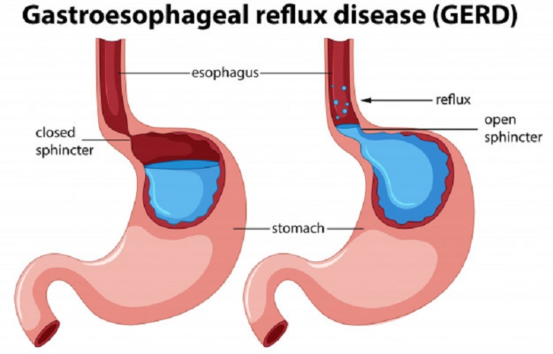

Bienvenue Sur Medical Education
Le vomissement
Definition
Le vomissement est un rejet actif d'une partie ou de la totalite du contenu gastro-intestinal par la bouche.
On differencie :
Le vomissement.
Le reflux gastro-œsophagien (correspond au reflux du contenu gastrique dans l'œsophage).
La regurgitation (rejet sans effort du liquide qui n'est pas encore parvenu dans l'estomac).
La pituite (rejet le matin a jeun chez la personne alcoolique).
Le merycisme : le nourrisson fait remonter volontairement le bol alimentaire a la bouche.
Physiopathologie
Le vomissement se deroule en plusieurs phases :
Fermeture du pylore (orifice qui fait communiquer l'estomac et le duodenum (intestin grele).
Contraction de l'antre (portion terminale de l'estomac se situant avant le pylore).
Contraction de diaphragme et des muscles abdominaux.
Ouverture du cardia (orifice faisant communiquer l'œsophage et l'estomac).
Evacuation violente du liquide gastrique.
Le vomissement est commande par un centre nerveux qui se situe au niveau du bulbe cerebral.

Etiologies
Les vomissements peuvent s'accompagner des affections digestives ou extra-digestives telles que :
Occlusion.
Colique nephretique.
Les vomissements chroniques peuvent etre dues a differentes causes :
Stenoses digestives.
Prise medicamenteuse.
Perturbation endocrinienne ou metabolique.
Causes neurologiques.
Causes psychologiques et ou psychiatriques.
Complications
Deshydratation : surveillance du pli cutanee, secheresse des muqueuses, diminution de la diurese, constipation, tachycardie.
Denutrition : anorexie.
Perturbation hydroelectrolytique : hyponatremie, hypokaliemie
Œsophagite due a l'acidite du liquide gastrique.
Syndrome de Mallory-Weiss (lesion de la muqueuse œsophagienne).
Rupture spontanee de l'œsophage.
Eventration chez l'opere.
Traitements
Anti-emetiques.
Compenser les troubles hydroelectrolytiques.
Traitement des causes du vomissement.
Soins infirmiers
Reperer les caracteristiques du vomissement
Frequence et debut des troubles.
Quantite, odeur, aspect, couleur :
Vomissement alimentaire.
Vomissement de suc gastrique : incolore.
Vomissement bileux : jaune.
Vomissement fecaloede : marron, nauseabond.
Vomissement sanglant : rouge vif ou sang noir.
Vomissement en jet : meningite ou hypertension intracrenienne.
Rechercher les signes accompagnateurs
Peleur, sueur, sensation de malaise, vertige.
Douleur abdominale.
Trouble du transit.
Fievre, modification du pouls et de la tension arterielle.
Compenser les pertes en eau et en electrolytes et maintenir un etat de denutrition correcte
Encourager la prise de liquide en petite quantite.
Repas fractionnes a distance des vomissements.
Augmentation de la valeur energetique de l'alimentation.
Eviter les aliments tres sucres et tres gras.
Faire le bilan des entrees (liquides, aliments, perfusions) et des sorties (vomissement, diurese).
Etablir une courbe de surveillance du poids.
Reduire les vomissements et maintenir le bien-etre, l'hygiene et le confort de la personne soignee
Reduire les odeurs et spectacles desagreables : linge propre, materiel propre (cuvette, crachoir), mouchoirs, aerer la piece.
Position adaptee : preferer la position demi-assise apres le repas, eviter le decubitus dorsal.
Maintenir la personne a l'ecart des visiteurs, des voisins de chambre.
Apres le vomissement, proposer des soins d'hygiene : dentaire, laver le visage, verre d'eau.
Linge humide et frais sur le front.
Sonnette a porter de main.
Rele sur prescription medicale
Planifier les traitements anti-emetiques : une demi-heure avant les repas.
Voir aussi :
L'appareil digestif
Module Gastro-enterologie